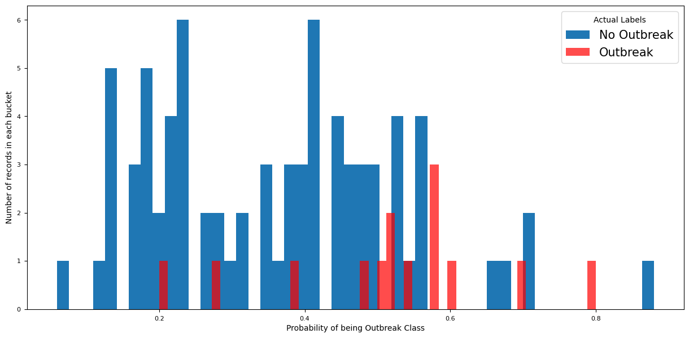
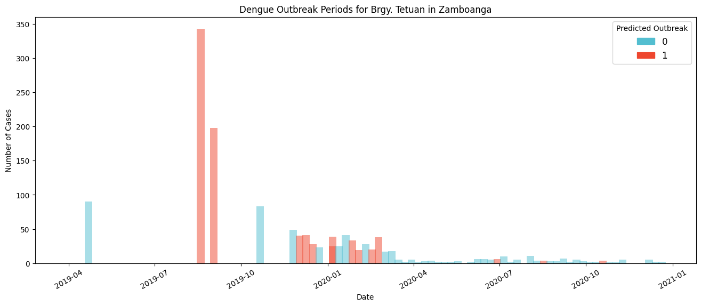
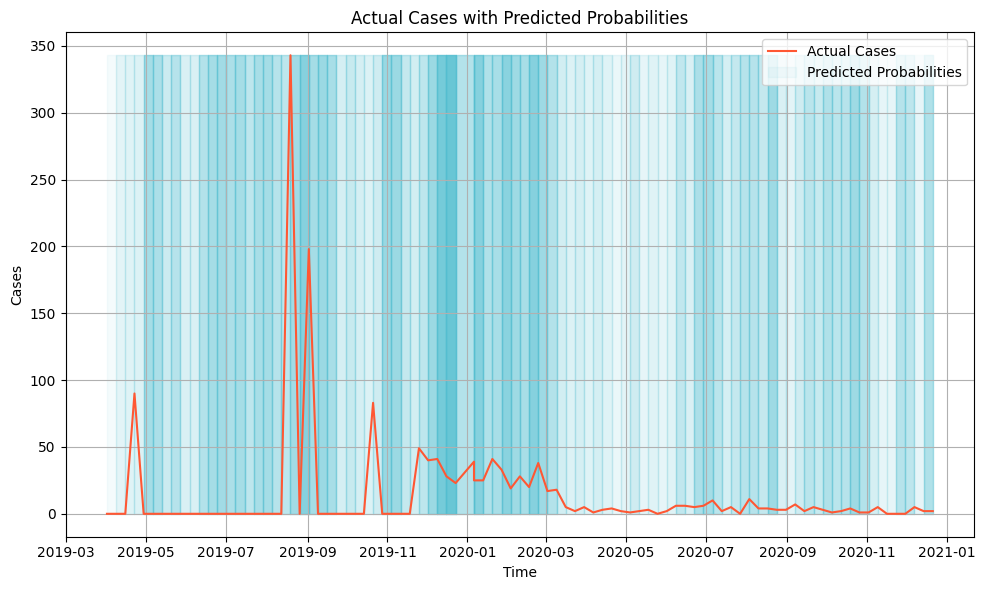

import sys
sys.path.append("../../")
from src.model_data_prep import create_outbreak_summaryUsing the linked dataset in a baseline model for predicting disease outbreak periods
We created an outbreak prediction baseline model that demonstrates the use of the Project CCHAIN linked dataset in a machine learning use case.
Objective: Predict dengue outbreaks and the number of cases for Zamboanga City at the weekly scale
The following must be included as features for the model:
| Factor | Variables |
|---|---|
| Climate | temperature, humidity, rainfall, solar radiation, wind speed, vegetation, air quality |
| Demographics | population, population density |
| Facilities | clinics, hospitals, sanitation, water source, |
| Economic activity | nightlights radiance |
For this model, we will define the training and testing set as follows:
| Set | Time covered |
|---|---|
| Training | Jan 2014-Mar 2019 (75 mos) |
| Testing | Apr 2014-Dec 2020 (20 mos) |
from pathlib import Path
import numpy as np
import pandas as pd
from sklearn.model_selection import TimeSeriesSplit, GridSearchCV
from sklearn.ensemble import RandomForestRegressor, RandomForestClassifier
from sklearn.metrics import (
r2_score,
mean_absolute_error,
mean_squared_error,
confusion_matrix,
classification_report,
ConfusionMatrixDisplay,
)
import shap
import matplotlib.pyplot as plt
from matplotlib.colors import LinearSegmentedColormap
import plotly.graph_objects as go
import plotly.express as pxPROCESSED_DIR = Path("../../data/03-processed/")
# LINKED_DATA = PROCESSED_DIR / "linked_df_city_weekly_dengue.csv"
LINKED_DATA = (
PROCESSED_DIR / "linked_training_data/linked_df_pidsr_city_weekly_dengue.csv"
)Load the labeled linked dataset
Generate the linked dataset using the Linking Colaboratory Notebook and download locally. Specifications on the temporal coverage, tables, and columns needed are listed in the summary at the start of this notebook.
linked_data = pd.read_csv(LINKED_DATA)
linked_data.head()| Source | year | Month | Week | Date | Region | PSGC_Region | Municipality | ADM3_PCODE | ICD | ... | google_bldgs_density_mean | google_bldgs_pct_built_up_area_sum | google_bldgs_pct_built_up_area_mean | travel_time | hospital_pop_reached_total | hospital_pct_population_reached | healthcenter_pop_reached_total | healthcenter_pct_population_reached | rhu_pop_reached_total | rhu_pct_population_reached | |
|---|---|---|---|---|---|---|---|---|---|---|---|---|---|---|---|---|---|---|---|---|---|
| 0 | PIDSR-DOH | 2008.0 | 1.0 | 1 | 2008-01-07 | Region IX | PH090000000 | Zamboanga City | PH097332000 | A90-A91 | ... | 0.001116 | 908.037478 | 8.99047 | 5 | 124434.91 | 14.46 | 456862.05 | 53.09 | 301674.11 | 35.06 |
| 1 | PIDSR-DOH | 2008.0 | 1.0 | 2 | 2008-01-07 | Region IX | PH090000000 | Zamboanga City | PH097332000 | A90-A91 | ... | 0.001116 | 908.037478 | 8.99047 | 5 | 124434.91 | 14.46 | 456862.05 | 53.09 | 301674.11 | 35.06 |
| 2 | PIDSR-DOH | 2008.0 | 1.0 | 3 | 2008-01-14 | Region IX | PH090000000 | Zamboanga City | PH097332000 | A90-A91 | ... | 0.001116 | 908.037478 | 8.99047 | 5 | 124434.91 | 14.46 | 456862.05 | 53.09 | 301674.11 | 35.06 |
| 3 | PIDSR-DOH | 2008.0 | 1.0 | 4 | 2008-01-21 | Region IX | PH090000000 | Zamboanga City | PH097332000 | A90-A91 | ... | 0.001116 | 908.037478 | 8.99047 | 5 | 124434.91 | 14.46 | 456862.05 | 53.09 | 301674.11 | 35.06 |
| 4 | PIDSR-DOH | 2008.0 | 1.0 | 5 | 2008-01-28 | Region IX | PH090000000 | Zamboanga City | PH097332000 | A90-A91 | ... | 0.001116 | 908.037478 | 8.99047 | 5 | 124434.91 | 14.46 | 456862.05 | 53.09 | 301674.11 | 35.06 |
5 rows × 255 columns
Remove once we replace with linked data from linking notebook
Sort the dataframe by Date and place it at the left-most column.
linked_data["Date"] = pd.to_datetime(linked_data["Date"])
linked_data = linked_data.sort_values(by=["Date"])
linked_data = linked_data.drop(columns=["start_of_week"])
linked_data.insert(0, "Date", linked_data.pop("Date"))Filter, select, and create features
# add labels to datato remove this part after we get generated dataset from linked notebook
1. Filter to year with existing OSM and population data
OSM-related features are only available from year 2014 onwards and the population features are only availble until year 2020.
linked_data = linked_data[(linked_data["year"] >= 2014) & (linked_data["year"] <= 2020)]linked_data.shape(364, 254)print(linked_data.columns.tolist())['Date', 'Source', 'year', 'Month', 'Week', 'Region', 'PSGC_Region', 'Municipality', 'ADM3_PCODE', 'ICD', 'Disease', 'Cases', 'Claims', 'Deaths', 'Case_Type', 'Date_Type', 'outbreak', 'outbreak_group', 'CO_AVG_mean', 'CO_MIN_mean', 'CO_MAX_mean', 'CO_STD_mean', 'WEIGHTED_AVG_CO_mean', 'HI_AVG_mean', 'HI_MIN_mean', 'HI_MAX_mean', 'HI_STD_mean', 'WEIGHTED_AVG_HI_mean', 'NDVI_AVG_mean', 'NDVI_MIN_mean', 'NDVI_MAX_mean', 'NDVI_STD_mean', 'WEIGHTED_AVG_NDVI_mean', 'NO2_AVG_mean', 'NO2_MIN_mean', 'NO2_MAX_mean', 'NO2_STD_mean', 'WEIGHTED_AVG_NO2_mean', 'O3_AVG_mean', 'O3_MIN_mean', 'O3_MAX_mean', 'O3_STD_mean', 'WEIGHTED_AVG_O3_mean', 'PM10_AVG_mean', 'PM10_MIN_mean', 'PM10_MAX_mean', 'PM10_STD_mean', 'WEIGHTED_AVG_PM10_mean', 'PM25_AVG_mean', 'PM25_MIN_mean', 'PM25_MAX_mean', 'PM25_STD_mean', 'WEIGHTED_AVG_PM25_mean', 'PNP_AVG_mean', 'PNP_MIN_mean', 'PNP_MAX_mean', 'PNP_STD_mean', 'WEIGHTED_AVG_PNP_mean', 'PR_AVG_mean', 'PR_MIN_mean', 'PR_MAX_mean', 'PR_STD_mean', 'WEIGHTED_AVG_PR_mean', 'RH_AVG_mean', 'RH_MIN_mean', 'RH_MAX_mean', 'RH_STD_mean', 'WEIGHTED_AVG_RH_mean', 'SO2_AVG_mean', 'SO2_MIN_mean', 'SO2_MAX_mean', 'SO2_STD_mean', 'WEIGHTED_AVG_SO2_mean', 'SPI3_AVG_mean', 'SPI3_MIN_mean', 'SPI3_MAX_mean', 'SPI3_STD_mean', 'WEIGHTED_AVG_SPI3_mean', 'SPI6_AVG_mean', 'SPI6_MIN_mean', 'SPI6_MAX_mean', 'SPI6_STD_mean', 'WEIGHTED_AVG_SPI6_mean', 'SR_AVG_mean', 'SR_MIN_mean', 'SR_MAX_mean', 'SR_STD_mean', 'WEIGHTED_AVG_SR_mean', 'Tave_AVG_mean', 'Tave_MIN_mean', 'Tave_MAX_mean', 'Tave_STD_mean', 'WEIGHTED_AVG_Tave_mean', 'Tmax_AVG_mean', 'Tmax_MIN_mean', 'Tmax_MAX_mean', 'Tmax_STD_mean', 'WEIGHTED_AVG_Tmax_mean', 'Tmin_AVG_mean', 'Tmin_MIN_mean', 'Tmin_MAX_mean', 'Tmin_STD_mean', 'WEIGHTED_AVG_Tmin_mean', 'UVR_AVG_mean', 'UVR_MIN_mean', 'UVR_MAX_mean', 'UVR_STD_mean', 'WEIGHTED_AVG_UVR_mean', 'WS_AVG_mean', 'WS_MIN_mean', 'WS_MAX_mean', 'WS_STD_mean', 'WEIGHTED_AVG_WS_mean', 'poi_count_sum', 'poi_count_mean', 'clinic_count_sum', 'clinic_count_mean', 'dentist_count_sum', 'dentist_count_mean', 'doctors_count_sum', 'doctors_count_mean', 'hospital_count_sum', 'hospital_count_mean', 'optician_count_sum', 'optician_count_mean', 'pharmacy_count_sum', 'pharmacy_count_mean', 'drinking_water_count_sum', 'drinking_water_count_mean', 'water_mill_count_sum', 'water_mill_count_mean', 'water_tower_count_sum', 'water_tower_count_mean', 'water_works_count_sum', 'water_works_count_mean', 'water_well_count_sum', 'water_well_count_mean', 'sanitary_dump_station_count_sum', 'sanitary_dump_station_count_mean', 'toilet_count_sum', 'toilet_count_mean', 'recycling_count_sum', 'recycling_count_mean', 'waste_basket_count_sum', 'waste_basket_count_mean', 'wastewater_plant_count_sum', 'wastewater_plant_count_mean', 'waste_transfer_station_count_sum', 'waste_transfer_station_count_mean', 'weighted_avg_clinic_nearest_mean', 'weighted_avg_dentist_nearest_mean', 'weighted_avg_doctors_nearest_mean', 'weighted_avg_hospital_nearest_mean', 'weighted_avg_optician_nearest_mean', 'weighted_avg_pharmacy_nearest_mean', 'weighted_avg_drinking_water_nearest_mean', 'weighted_avg_water_mill_nearest_mean', 'weighted_avg_water_tower_nearest_mean', 'weighted_avg_water_works_nearest_mean', 'weighted_avg_water_well_nearest_mean', 'weighted_avg_sanitary_dump_station_nearest_mean', 'weighted_avg_toilet_nearest_mean', 'weighted_avg_recycling_nearest_mean', 'weighted_avg_waste_basket_nearest_mean', 'weighted_avg_wastewater_plant_nearest_mean', 'weighted_avg_waste_transfer_station_nearest_mean', 'weighted_avg_osm_river_nearest_mean', 'weighted_avg_osm_stream_nearest_mean', 'weighted_avg_osm_canal_nearest_mean', 'weighted_avg_osm_drain_nearest_mean', 'weighted_avg_osm_wetland_nearest_mean', 'weighted_avg_osm_reservoir_nearest_mean', 'weighted_avg_osm_water_nearest_mean', 'weighted_avg_osm_riverbank_nearest_mean', 'weighted_avg_osm_dock_nearest_mean', 'pop_count_total', 'pop_density_per_m2', 'brgy_pop_count_mean', 'brgy_total_area_mean', 'avg_rad_min_mean', 'avg_rad_max_mean', 'avg_rad_mean_mean', 'avg_rad_std_mean', 'avg_rad_median_mean', 'doh_pois_count_sum', 'doh_pois_count_mean', 'doh_brgy_health_station_count_sum', 'doh_brgy_health_station_count_mean', 'doh_rural_health_unit_count_sum', 'doh_rural_health_unit_count_mean', 'doh_hospital_count_sum', 'doh_hospital_count_mean', 'doh_birthing_home_lying_in_clinic_count_sum', 'doh_birthing_home_lying_in_clinic_count_mean', 'doh_infirmary_count_sum', 'doh_infirmary_count_mean', 'doh_drug_abuse_treatment_rehabilitation_center_count_sum', 'doh_drug_abuse_treatment_rehabilitation_center_count_mean', 'doh_social_hygiene_clinic_count_sum', 'doh_social_hygiene_clinic_count_mean', 'doh_medical_clinic_count_sum', 'doh_medical_clinic_count_mean', 'weighted_avg_doh_brgy_health_station_nearest_mean', 'weighted_avg_doh_rural_health_unit_nearest_mean', 'weighted_avg_doh_hospital_nearest_mean', 'weighted_avg_doh_birthing_home_lying_in_clinic_nearest_mean', 'weighted_avg_doh_infirmary_nearest_mean', 'weighted_avg_doh_drug_abuse_treatment_rehabilitation_center_nearest_mean', 'weighted_avg_doh_social_hygiene_clinic_nearest_mean', 'weighted_avg_doh_medical_clinic_nearest_mean', 'pct_area_flood_hazard_100yr_low_mean', 'pct_area_flood_hazard_100yr_med_mean', 'pct_area_flood_hazard_100yr_high_mean', 'pct_area_flood_hazard_25yr_low_mean', 'pct_area_flood_hazard_25yr_med_mean', 'pct_area_flood_hazard_25yr_high_mean', 'pct_area_flood_hazard_5yr_low_mean', 'pct_area_flood_hazard_5yr_med_mean', 'pct_area_flood_hazard_5yr_high_mean', 'pct_area_landslide_hazard_low_mean', 'pct_area_landslide_hazard_med_mean', 'pct_area_landslide_hazard_high_mean', 'pct_area_bare_sparse_vegetation_mean', 'pct_area_builtup_mean', 'pct_area_cropland_mean', 'pct_area_grassland_mean', 'pct_area_herbaceous_wetland_mean', 'pct_area_mangroves_mean', 'pct_area_permanent_water_bodies_mean', 'pct_area_shrubland_mean', 'pct_area_tree_cover_mean', 'google_bldgs_count_sum', 'google_bldgs_count_mean', 'google_bldgs_area_total_sum', 'google_bldgs_area_total_mean', 'google_bldgs_area_mean_sum', 'google_bldgs_area_mean_mean', 'google_bldgs_count_lt100_sqm_sum', 'google_bldgs_count_lt100_sqm_mean', 'google_bldgs_count_100_200_sqm_sum', 'google_bldgs_count_100_200_sqm_mean', 'google_bldgs_count_gt_200_sqm_sum', 'google_bldgs_count_gt_200_sqm_mean', 'google_bldgs_density_sum', 'google_bldgs_density_mean', 'google_bldgs_pct_built_up_area_sum', 'google_bldgs_pct_built_up_area_mean', 'travel_time', 'hospital_pop_reached_total', 'hospital_pct_population_reached', 'healthcenter_pop_reached_total', 'healthcenter_pct_population_reached', 'rhu_pop_reached_total', 'rhu_pct_population_reached']2. Inspect missing data
print(linked_data.columns[linked_data.isnull().any()].tolist())['Claims', 'Deaths', 'PNP_AVG_mean', 'PNP_MIN_mean', 'PNP_MAX_mean', 'PNP_STD_mean', 'WEIGHTED_AVG_PNP_mean', 'SPI3_AVG_mean', 'SPI3_MIN_mean', 'SPI3_MAX_mean', 'SPI3_STD_mean', 'WEIGHTED_AVG_SPI3_mean', 'SPI6_AVG_mean', 'SPI6_MIN_mean', 'SPI6_MAX_mean', 'SPI6_STD_mean', 'WEIGHTED_AVG_SPI6_mean']to remove this part after we get generated dataset from linked notebook
3. Remove columns that could cause the model confusion
# remove ookla for now
filtered_linked_df = linked_data.drop(
columns=[
"Source",
"year",
"Month",
"Week",
"Region",
"PSGC_Region",
"Municipality",
"ICD",
"Disease",
"Claims",
"Deaths",
"Case_Type",
"Date_Type",
"outbreak_group",
# remove climate features with nulls
"PNP_AVG_mean",
"PNP_MIN_mean",
"PNP_MAX_mean",
"PNP_STD_mean",
"WEIGHTED_AVG_PNP_mean",
"SPI3_AVG_mean",
"SPI3_MIN_mean",
"SPI3_MAX_mean",
"SPI3_STD_mean",
"WEIGHTED_AVG_SPI3_mean",
"SPI6_AVG_mean",
"SPI6_MIN_mean",
"SPI6_MAX_mean",
"SPI6_STD_mean",
"WEIGHTED_AVG_SPI6_mean",
# remove static columns
# health facility POIs that are static
"doh_pois_count_sum",
"doh_pois_count_mean",
"doh_brgy_health_station_count_sum",
"doh_brgy_health_station_count_mean",
"doh_rural_health_unit_count_sum",
"doh_rural_health_unit_count_mean",
"doh_hospital_count_sum",
"doh_hospital_count_mean",
"doh_birthing_home_lying_in_clinic_count_sum",
"doh_birthing_home_lying_in_clinic_count_mean",
"doh_infirmary_count_sum",
"doh_infirmary_count_mean",
"doh_drug_abuse_treatment_rehabilitation_center_count_sum",
"doh_drug_abuse_treatment_rehabilitation_center_count_mean",
"doh_social_hygiene_clinic_count_sum",
"doh_social_hygiene_clinic_count_mean",
"doh_medical_clinic_count_sum",
"doh_medical_clinic_count_mean",
"weighted_avg_doh_brgy_health_station_nearest_mean",
"weighted_avg_doh_rural_health_unit_nearest_mean",
"weighted_avg_doh_hospital_nearest_mean",
"weighted_avg_doh_birthing_home_lying_in_clinic_nearest_mean",
"weighted_avg_doh_infirmary_nearest_mean",
"weighted_avg_doh_drug_abuse_treatment_rehabilitation_center_nearest_mean",
"weighted_avg_doh_social_hygiene_clinic_nearest_mean",
"weighted_avg_doh_medical_clinic_nearest_mean",
# static flood hazard features
"pct_area_flood_hazard_100yr_low_mean",
"pct_area_flood_hazard_100yr_med_mean",
"pct_area_flood_hazard_100yr_high_mean",
"pct_area_flood_hazard_25yr_low_mean",
"pct_area_flood_hazard_25yr_med_mean",
"pct_area_flood_hazard_25yr_high_mean",
"pct_area_flood_hazard_5yr_low_mean",
"pct_area_flood_hazard_5yr_med_mean",
"pct_area_flood_hazard_5yr_high_mean",
"pct_area_landslide_hazard_low_mean",
"pct_area_landslide_hazard_med_mean",
"pct_area_landslide_hazard_high_mean",
# static landcover features
"pct_area_bare_sparse_vegetation_mean",
"pct_area_builtup_mean",
"pct_area_cropland_mean",
"pct_area_grassland_mean",
"pct_area_herbaceous_wetland_mean",
"pct_area_mangroves_mean",
"pct_area_permanent_water_bodies_mean",
"pct_area_shrubland_mean",
"pct_area_tree_cover_mean",
# static infrastructure features
"google_bldgs_count_sum",
"google_bldgs_count_mean",
"google_bldgs_area_total_sum",
"google_bldgs_area_total_mean",
"google_bldgs_area_mean_sum",
"google_bldgs_area_mean_mean",
"google_bldgs_count_lt100_sqm_sum",
"google_bldgs_count_lt100_sqm_mean",
"google_bldgs_count_100_200_sqm_sum",
"google_bldgs_count_100_200_sqm_mean",
"google_bldgs_count_gt_200_sqm_sum",
"google_bldgs_count_gt_200_sqm_mean",
"google_bldgs_density_sum",
"google_bldgs_density_mean",
"google_bldgs_pct_built_up_area_sum",
"google_bldgs_pct_built_up_area_mean",
# static isochrone features
"travel_time",
"hospital_pop_reached_total",
"hospital_pct_population_reached",
"healthcenter_pop_reached_total",
"healthcenter_pct_population_reached",
"rhu_pop_reached_total",
"rhu_pct_population_reached",
]
)to remove this part after we get generated dataset from linked notebook
4. Handle rows with null values
- Replace null values for
Nightlightfeatures with 0
ntl_features = [
"avg_rad_min_mean",
"avg_rad_max_mean",
"avg_rad_mean_mean",
"avg_rad_std_mean",
"avg_rad_median_mean",
]
filtered_linked_df[ntl_features] = filtered_linked_df[ntl_features].fillna(0)5. Create outbreak label
We will now create another column indicating if that week is an outbreak week or not based on the number of cases. This is an important prerequisite step for our modeling. For this demonstration, we define an outbreak as follows:
The start of an outbreak occurs when the week’s cases equal to or higher than a threshold.
- The threshold is defined as the 75th percentile of weekly cases based on years when a substantial number of cases are recorded.
The end of an outbreak occurs during the week when cases fall below the threshold for at least 2 weeks.
We use this definition to create column outbreak containing 1 if the week is classified as an outbreak, and 0 if its a non-outbreak.
## Add code here
# get substantial years with high number of cases recorded
agg_year = linked_data.groupby(["Year"])["Cases"].sum().reset_index(name="Cases")
agg_year.linked_data("Cases", ascending=False)After getting the years with the highest number of cases recorded, we will temporarily subset the data and get the distribution of the throughout those years only. Use the .describe() function to see the percentiles.
top_years_list = [
2011.0,
2012.0,
2013.0,
2017.0,
2018.0,
2019.0,
2020.0,
2021.0,
2022.0,
]
subset_zamb = linked_data[linked_data["Year"].isin(top_years_list)]
subset_zamb["Cases"].describe()Update the OUTBREAK_THRESHOLD to serve as the marker whether a week will be tagged as an outbreak or not.
# Edit this value to your identified threshold
# Set your threshold value
OUTBREAK_THRESHOLD = 44After running the step below, you should be able to see an additional column outbreak at the rightmost part of the table containing 0s and 1s. This means that the health data has been labeled and now prepared for modeling.
# Create a new column 'outbreak' initialized with zeros
linked_data["outbreak"] = 0
# Track weeks satisfying the threshold, and count consecutive outbreak weeks
consecutive_weeks_below_threshold = 0
previous_outbreak = False
for index, row in linked_data.iterrows():
if row["Cases"] > OUTBREAK_THRESHOLD:
consecutive_weeks_below_threshold = 0
previous_outbreak = True
linked_data.at[index, "outbreak"] = 1
else:
# check if previous week was an outbreak
# if yes, continue to tag current week as outbreak
# part of observation period
if previous_outbreak and consecutive_weeks_below_threshold < 2:
linked_data.at[index, "outbreak"] = 1
consecutive_weeks_below_threshold += 1
elif consecutive_weeks_below_threshold == 2:
linked_data.at[index, "outbreak"] = 0
previous_outbreak = False
else:
linked_data.at[index, "outbreak"] = 0# view data
linked_data.head()5. Create lagged features for Cases
Adding previous week’s cases as features may help enhance the model’s capability in predicting future cases.
You can try experimenting with the lagged features by adding or removing them.
# Group by barangay and return the date of the previous number of cases
filtered_linked_df = filtered_linked_df.assign(
prev_1_wk_numcases=filtered_linked_df["Cases"].shift(
1, fill_value=0
), # cases a week before
prev_2_wk_numcases=filtered_linked_df["Cases"].shift(
2, fill_value=0
), # cases 2 weeks before
prev_3_wk_numcases=filtered_linked_df["Cases"].shift(
3, fill_value=0
), # cases 3 weeks before
prev_1_mo_numcases=filtered_linked_df["Cases"].shift(
4, fill_value=0
), # cases 1 month before
)
filtered_linked_df.shape(364, 159)# print out final columns
print(list(filtered_linked_df.columns))['Date', 'ADM3_PCODE', 'Cases', 'outbreak', 'CO_AVG_mean', 'CO_MIN_mean', 'CO_MAX_mean', 'CO_STD_mean', 'WEIGHTED_AVG_CO_mean', 'HI_AVG_mean', 'HI_MIN_mean', 'HI_MAX_mean', 'HI_STD_mean', 'WEIGHTED_AVG_HI_mean', 'NDVI_AVG_mean', 'NDVI_MIN_mean', 'NDVI_MAX_mean', 'NDVI_STD_mean', 'WEIGHTED_AVG_NDVI_mean', 'NO2_AVG_mean', 'NO2_MIN_mean', 'NO2_MAX_mean', 'NO2_STD_mean', 'WEIGHTED_AVG_NO2_mean', 'O3_AVG_mean', 'O3_MIN_mean', 'O3_MAX_mean', 'O3_STD_mean', 'WEIGHTED_AVG_O3_mean', 'PM10_AVG_mean', 'PM10_MIN_mean', 'PM10_MAX_mean', 'PM10_STD_mean', 'WEIGHTED_AVG_PM10_mean', 'PM25_AVG_mean', 'PM25_MIN_mean', 'PM25_MAX_mean', 'PM25_STD_mean', 'WEIGHTED_AVG_PM25_mean', 'PR_AVG_mean', 'PR_MIN_mean', 'PR_MAX_mean', 'PR_STD_mean', 'WEIGHTED_AVG_PR_mean', 'RH_AVG_mean', 'RH_MIN_mean', 'RH_MAX_mean', 'RH_STD_mean', 'WEIGHTED_AVG_RH_mean', 'SO2_AVG_mean', 'SO2_MIN_mean', 'SO2_MAX_mean', 'SO2_STD_mean', 'WEIGHTED_AVG_SO2_mean', 'SR_AVG_mean', 'SR_MIN_mean', 'SR_MAX_mean', 'SR_STD_mean', 'WEIGHTED_AVG_SR_mean', 'Tave_AVG_mean', 'Tave_MIN_mean', 'Tave_MAX_mean', 'Tave_STD_mean', 'WEIGHTED_AVG_Tave_mean', 'Tmax_AVG_mean', 'Tmax_MIN_mean', 'Tmax_MAX_mean', 'Tmax_STD_mean', 'WEIGHTED_AVG_Tmax_mean', 'Tmin_AVG_mean', 'Tmin_MIN_mean', 'Tmin_MAX_mean', 'Tmin_STD_mean', 'WEIGHTED_AVG_Tmin_mean', 'UVR_AVG_mean', 'UVR_MIN_mean', 'UVR_MAX_mean', 'UVR_STD_mean', 'WEIGHTED_AVG_UVR_mean', 'WS_AVG_mean', 'WS_MIN_mean', 'WS_MAX_mean', 'WS_STD_mean', 'WEIGHTED_AVG_WS_mean', 'poi_count_sum', 'poi_count_mean', 'clinic_count_sum', 'clinic_count_mean', 'dentist_count_sum', 'dentist_count_mean', 'doctors_count_sum', 'doctors_count_mean', 'hospital_count_sum', 'hospital_count_mean', 'optician_count_sum', 'optician_count_mean', 'pharmacy_count_sum', 'pharmacy_count_mean', 'drinking_water_count_sum', 'drinking_water_count_mean', 'water_mill_count_sum', 'water_mill_count_mean', 'water_tower_count_sum', 'water_tower_count_mean', 'water_works_count_sum', 'water_works_count_mean', 'water_well_count_sum', 'water_well_count_mean', 'sanitary_dump_station_count_sum', 'sanitary_dump_station_count_mean', 'toilet_count_sum', 'toilet_count_mean', 'recycling_count_sum', 'recycling_count_mean', 'waste_basket_count_sum', 'waste_basket_count_mean', 'wastewater_plant_count_sum', 'wastewater_plant_count_mean', 'waste_transfer_station_count_sum', 'waste_transfer_station_count_mean', 'weighted_avg_clinic_nearest_mean', 'weighted_avg_dentist_nearest_mean', 'weighted_avg_doctors_nearest_mean', 'weighted_avg_hospital_nearest_mean', 'weighted_avg_optician_nearest_mean', 'weighted_avg_pharmacy_nearest_mean', 'weighted_avg_drinking_water_nearest_mean', 'weighted_avg_water_mill_nearest_mean', 'weighted_avg_water_tower_nearest_mean', 'weighted_avg_water_works_nearest_mean', 'weighted_avg_water_well_nearest_mean', 'weighted_avg_sanitary_dump_station_nearest_mean', 'weighted_avg_toilet_nearest_mean', 'weighted_avg_recycling_nearest_mean', 'weighted_avg_waste_basket_nearest_mean', 'weighted_avg_wastewater_plant_nearest_mean', 'weighted_avg_waste_transfer_station_nearest_mean', 'weighted_avg_osm_river_nearest_mean', 'weighted_avg_osm_stream_nearest_mean', 'weighted_avg_osm_canal_nearest_mean', 'weighted_avg_osm_drain_nearest_mean', 'weighted_avg_osm_wetland_nearest_mean', 'weighted_avg_osm_reservoir_nearest_mean', 'weighted_avg_osm_water_nearest_mean', 'weighted_avg_osm_riverbank_nearest_mean', 'weighted_avg_osm_dock_nearest_mean', 'pop_count_total', 'pop_density_per_m2', 'brgy_pop_count_mean', 'brgy_total_area_mean', 'avg_rad_min_mean', 'avg_rad_max_mean', 'avg_rad_mean_mean', 'avg_rad_std_mean', 'avg_rad_median_mean', 'prev_1_wk_numcases', 'prev_2_wk_numcases', 'prev_3_wk_numcases', 'prev_1_mo_numcases']filtered_linked_df.head()| Date | ADM3_PCODE | Cases | outbreak | CO_AVG_mean | CO_MIN_mean | CO_MAX_mean | CO_STD_mean | WEIGHTED_AVG_CO_mean | HI_AVG_mean | ... | brgy_total_area_mean | avg_rad_min_mean | avg_rad_max_mean | avg_rad_mean_mean | avg_rad_std_mean | avg_rad_median_mean | prev_1_wk_numcases | prev_2_wk_numcases | prev_3_wk_numcases | prev_1_mo_numcases | |
|---|---|---|---|---|---|---|---|---|---|---|---|---|---|---|---|---|---|---|---|---|---|
| 312 | 2014-01-06 | PH097332000 | 0.0 | 0 | 0.071684 | 0.061561 | 0.081937 | 0.007905 | 0.071684 | 27.839929 | ... | 1.515541e+07 | 1.738257 | 5.266028 | 2.946094 | 1.036254 | 2.805252 | 0.0 | 0.0 | 0.0 | 0.0 |
| 313 | 2014-01-06 | PH097332000 | 0.0 | 0 | 0.071684 | 0.061561 | 0.081937 | 0.007905 | 0.071684 | 27.839929 | ... | 1.515541e+07 | 1.738257 | 5.266028 | 2.946094 | 1.036254 | 2.805252 | 0.0 | 0.0 | 0.0 | 0.0 |
| 314 | 2014-01-13 | PH097332000 | 0.0 | 0 | 0.080858 | 0.069232 | 0.093571 | 0.008738 | 0.080858 | 26.511542 | ... | 1.515541e+07 | 1.738257 | 5.266028 | 2.946094 | 1.036254 | 2.805252 | 0.0 | 0.0 | 0.0 | 0.0 |
| 315 | 2014-01-20 | PH097332000 | 0.0 | 0 | 0.081604 | 0.075696 | 0.091231 | 0.005616 | 0.081604 | 26.305700 | ... | 1.515541e+07 | 1.738257 | 5.266028 | 2.946094 | 1.036254 | 2.805252 | 0.0 | 0.0 | 0.0 | 0.0 |
| 316 | 2014-01-27 | PH097332000 | 0.0 | 0 | 0.074839 | 0.071346 | 0.081812 | 0.004384 | 0.074839 | 26.145516 | ... | 1.515541e+07 | 1.738257 | 5.266028 | 2.946094 | 1.036254 | 2.805252 | 0.0 | 0.0 | 0.0 | 0.0 |
5 rows × 159 columns
Setup model training
1. Split to train-test set
We use TimeSeriesSplit to properly cross-validate the model.
filtered_linked_df = filtered_linked_df.set_index("Date")# split features and target label
X = filtered_linked_df.drop(labels=["outbreak"], axis=1)
y = filtered_linked_df["outbreak"]tss = TimeSeriesSplit(n_splits=3)
for train_index, test_index in tss.split(X):
X_train, X_test = X.iloc[train_index, :], X.iloc[test_index, :]
y_train, y_test = y.iloc[train_index], y.iloc[test_index]# set these aside to link back later to the predictions for analysis
brgy_tests = X_test["ADM3_PCODE"]
numcases_test = X_test["Cases"]
# drop the columns above
X_train = X_train.drop(columns=["ADM3_PCODE", "Cases"])
X_test = X_test.drop(columns=["ADM3_PCODE", "Cases"])2. Check train and test split
Check the exact lengths of the train-test split. For our use case, having a test set consisting of a year and 6 months is enough. This may be changed depending on the disease chosen.
You may experiment the splits by changing the n_splits parameter in the TimeSeriesSplit step above. Increasing the n_splits would give a narrower time period for the test set.
len(X_train), len(X_test)(273, 91)# training data date coverage
X_train.index.min(), X_train.index.max()(Timestamp('2014-01-06 00:00:00'), Timestamp('2019-03-25 00:00:00'))# testing data date coverage
X_test.index.min(), X_test.index.max()(Timestamp('2019-04-01 00:00:00'), Timestamp('2020-12-21 00:00:00'))Train a RandomForest Classifier
1. Optimize model parameters using GridSearchCV
# Define model and parameter space to optimize
classifier = RandomForestClassifier(random_state=42)
param_grid = {
"n_estimators": [50, 100, 200, 300, 500],
"max_depth": [None, 5, 10, 15, 20],
}model_grid_search = GridSearchCV(classifier, param_grid, verbose=1, cv=5)
model_grid_search.fit(X_train, y_train)Fitting 5 folds for each of 25 candidates, totalling 125 fitsGridSearchCV(cv=5, estimator=RandomForestClassifier(random_state=42),
param_grid={'max_depth': [None, 5, 10, 15, 20],
'n_estimators': [50, 100, 200, 300, 500]},
verbose=1)In a Jupyter environment, please rerun this cell to show the HTML representation or trust the notebook. On GitHub, the HTML representation is unable to render, please try loading this page with nbviewer.org.
GridSearchCV(cv=5, estimator=RandomForestClassifier(random_state=42),
param_grid={'max_depth': [None, 5, 10, 15, 20],
'n_estimators': [50, 100, 200, 300, 500]},
verbose=1)RandomForestClassifier(random_state=42)
RandomForestClassifier(random_state=42)
print(f"Best hyperparameters: {model_grid_search.best_params_}")
print(f"Train best score: {model_grid_search.best_score_:0.4}")
print(
f"Train best score std: {np.std(model_grid_search.cv_results_['mean_test_score']):0.4}"
)Best hyperparameters: {'max_depth': None, 'n_estimators': 50}
Train best score: 0.8706
Train best score std: 0.0038372. Check model performance
Apply the model with the best parameters to the test set to check its performance. The outputted score is the mean accuracy.
test_score = model_grid_search.score(X_test, y_test)
print(f"Test best score: {test_score:0.6}")Test best score: 0.791209# Evaluate the model on test data
best_rf_classifier_model = model_grid_search.best_estimator_
test_accuracy = best_rf_classifier_model.score(X_test, y_test)
print("Test Accuracy:", test_accuracy)Test Accuracy: 0.7912087912087912The best model predicts outbreaks with 79.12% accuracy
Inspect model results
1. Make predictions on the test set
Now that we have chosen the best model to use, we can now run the best RandomForest Classifier model on our test set and extract the predicted values.
To get the discrete outbreak class prediction, outbreak (1) or not (0), run .predict. In this demonstration, we’d also like to include the predicted probabilities that comes along with the class predictions using the predict_proba function for analysis.
y_pred = best_rf_classifier_model.predict(X_test)
y_pred_proba = best_rf_classifier_model.predict_proba(X_test)
pred_results = pd.DataFrame(y_pred)
pred_results.describe()| 0 | |
|---|---|
| count | 91.000000 |
| mean | 0.252747 |
| std | 0.436995 |
| min | 0.000000 |
| 25% | 0.000000 |
| 50% | 0.000000 |
| 75% | 0.500000 |
| max | 1.000000 |
2. Visualize results and metrics
Review the results of the RF classification predictions using the classification_report. This summarizes on one table the accuracy, precision, recall, f1-score, and support (number of instances per class).
Indicated in the classification report a mean accuracy of 79.12% is achieved by the selected best model. Taking a look at other metrics, the model is able to correctly predict no outbreak weeks (0) more than outbreak weeks (1) with a recall of 81.82% compared to predictions of outbreak with a recall of 64.39%.
Important to also look at the support column. Support simply refers to the number of instances that we have in our test set for each outbreak label. In our test set, we have 77 weeks that have no outbreaks and 14 weeks that have outbreaks.
report = classification_report(y_test, y_pred, output_dict=True)
report_df = pd.DataFrame(report).transpose()
report_df| precision | recall | f1-score | support | |
|---|---|---|---|---|
| 0 | 0.926471 | 0.818182 | 0.868966 | 77.000000 |
| 1 | 0.391304 | 0.642857 | 0.486486 | 14.000000 |
| accuracy | 0.791209 | 0.791209 | 0.791209 | 0.791209 |
| macro avg | 0.658887 | 0.730519 | 0.677726 | 91.000000 |
| weighted avg | 0.844137 | 0.791209 | 0.810123 | 91.000000 |
To view how many of our predictions are correct against the actual values, we can use a confusion matrix. After running the cell below, you should be able to see a 2x2 matrix of true labels and predicted labels.

Based on the confusion matrix, we were able to correctly predict 63 no outbreak weeks out of 77 and for the outbreak weeks we were only able to predict 9 out of those 14 weeks from the test set. The model still experiences certain confusion when it comes to predicting for outbreak weeks since there are 5 weeks that were mislabeled as no outbreak (False Negatives) which could indicate a limitation of our dataset.
cm = confusion_matrix(y_test, y_pred, labels=best_rf_classifier_model.classes_)
disp = ConfusionMatrixDisplay(
confusion_matrix=cm, display_labels=best_rf_classifier_model.classes_
)
disp.plot()
plt.show()
To understand analyze the results of the model more, let’s visualize the predicted probabilities from the model through a colored histogram of the values.
In the plot below, the predicted probabilities are on the x-axis and the y-axis is the number of those instances. The colors are based on the actual labels. The expectation is the bars colored as blue should skew to the left side and the red bars skew to the right indicating that the model is able to distinguish the presence of an outbreak based on the features we’ve given.
Most of the outbreak weeks range from the 0.4 to 0.6 probabilities which indicates that the model finds difficulty in strongly distinguishing weeks with a dengue outbreak.
prediction = y_pred_proba[:, 1] # prediction for outbreak
plt.figure(figsize=(15, 7))
plt.hist(prediction[y_test == 0], bins=50, label="No Outbreak")
plt.hist(prediction[y_test == 1], bins=50, label="Outbreak", alpha=0.7, color="r")
plt.xlabel("Probability of being Outbreak Class", fontsize=10)
plt.ylabel("Number of records in each bucket", fontsize=10)
plt.legend(fontsize=15, title="Actual Labels")
plt.tick_params(axis="both", labelsize=8, pad=5)
plt.show()
3. Identify features that best explains outbreak prediction
explainer = shap.Explainer(best_rf_classifier_model)
shap_values = explainer.shap_values(X_test)From the SHAP, what impacted the predictions the most are the cases from the previous weeks, nighttime lights radiance, population, and distances to health facilities.
It is interesting to observe that the nighttime lights features and presence of POIs impact the outbreak prediction. This indicates that how urbanized a city has a possible influence on determining an outbreak.
shap.summary_plot(shap_values[0], X_test)
Analyzing outbreak predictions
Prepare the dataframe to include the actual number of cases and predictions on one table.
# Join back the predictions to the features for analysis.
analyze_df = X_test.copy()
analyze_df["ADM3_PCODE"] = brgy_tests
analyze_df["Cases"] = numcases_test
analyze_df["actual_class"] = y_test
analyze_df["predicted_class"] = y_pred
analyze_df["predicted_proba_outbreak"] = y_pred_proba[:, 1]
analyze_df = analyze_df.reset_index()analyize_df.head(2)1. Visualizing Actual vs. Predicted Outbreaks Periods
actual_outbreaks_summary = create_outbreak_summary(analyze_df, "actual_class")
actual_outbreaks_summary["category"] = "actual"
predicted_outbreaks_summary = create_outbreak_summary(analyze_df, "predicted_class")
predicted_outbreaks_summary["category"] = "predicted"outbreak_lengths_results = pd.concat(
[actual_outbreaks_summary, predicted_outbreaks_summary]
)
outbreak_lengths_results| outbreak_group | start_date | end_date | actual_length_weeks | category | |
|---|---|---|---|---|---|
| 0 | 1 | 2019-04-22 | 2019-05-06 | 3 | actual |
| 1 | 3 | 2019-08-19 | 2019-09-16 | 5 | actual |
| 2 | 5 | 2019-10-21 | 2019-11-04 | 3 | actual |
| 3 | 7 | 2019-11-25 | 2019-12-09 | 3 | actual |
| 0 | 1 | 2019-04-29 | 2019-04-29 | 1 | predicted |
| 1 | 3 | 2019-06-17 | 2019-06-24 | 2 | predicted |
| 2 | 5 | 2019-07-08 | 2019-07-08 | 1 | predicted |
| 3 | 7 | 2019-07-29 | 2019-07-29 | 1 | predicted |
| 4 | 9 | 2019-08-19 | 2019-09-09 | 4 | predicted |
| 5 | 11 | 2019-10-28 | 2019-11-04 | 2 | predicted |
| 6 | 13 | 2019-12-02 | 2019-12-16 | 3 | predicted |
| 7 | 15 | 2020-01-06 | 2020-01-06 | 2 | predicted |
| 8 | 17 | 2020-01-27 | 2020-02-03 | 2 | predicted |
| 9 | 19 | 2020-02-17 | 2020-02-24 | 2 | predicted |
| 10 | 21 | 2020-06-29 | 2020-06-29 | 1 | predicted |
| 11 | 23 | 2020-08-17 | 2020-08-17 | 1 | predicted |
| 12 | 25 | 2020-10-19 | 2020-10-19 | 1 | predicted |
Running the cell below should produce a dumbbell plot that shows the actual outbreak periods from the health data versus the predicted outbreak periods.
The resulting plot should look similar to this. The plot illustrates the outbreak periods from the dataframe prepared above.

This is only a sample plot, the resulting plot will not be exactly the same dependeing on the range of the test set.
# Set custom colors
class_colors = {"predicted": "#ee472f", "actual": "#53bed0"}
# Plot start and end outbreak points
fig = px.scatter(
outbreak_lengths_results,
x=["start_date", "end_date"],
y="category",
color="category",
size="actual_length_weeks",
labels={"x": "Date"},
category_orders={"category": ["actual", "predicted"]},
color_discrete_map=class_colors,
)
for i, row in outbreak_lengths_results.iterrows():
fig.add_trace(
go.Scatter(
mode="lines",
# layer="below",
line=dict(
color=class_colors[row["category"]],
width=3,
dash="solid",
),
# connect the two markers
x=[row["start_date"], row["end_date"]],
y=[row["category"], row["category"]],
showlegend=False,
)
)
# Update layout with title and axis titles
fig.update_layout(
title="Dengue Outbreak Periods for Zamboanga City",
xaxis_title="Date",
yaxis_title="Category",
)
fig.show()The actual outbreak periods are only 4 in total, however, the predicted outbreak periods are 13. Many of which look to be one week outbreak periods only.
The outbreak periods predicted in 2019 coincides with the actual outbreak periods by only being off by a week or two. The one week outbreaks during 2019 also occur near the actual date of the outbreak. Meanwhile, for 2020 there should have been no outbreaks for that year, however, sparse 1-2 week outbreak periods were predicted. It is possible that training on the year 2019 where the dengue cases peaked the most could have influenced the model into continuously predicting outbreaks for 2020 in single weeks that have a high number of cases.
2. Visualize actual Number of Cases with Predicted label
Let’s take a look now at the actual number of cases for the test set and what was the predicted outbreak label for them are.
fig, ax = plt.subplots(figsize=(16, 6))
# Define colors for each class
class_colors = {0: "#53bed0", 1: "#ee472f"}
# Plot the bar plot
ax.bar(
analyze_df["Date"],
analyze_df["Cases"],
alpha=0.5,
label="Bar Plot",
width=8,
color=[class_colors[c] for c in analyze_df["predicted_class"]],
)
# Rotate x-axis labels
plt.xticks(rotation=30)
# Create legend handles and labels for bar plot
legend_handles = [
plt.Rectangle((0, 0), 1, 1, color=color) for color in class_colors.values()
]
legend_labels = list(class_colors.keys())
# Add legend for bar plot
ax.legend(legend_handles, legend_labels, fontsize="large", title="Predicted Outbreak")
# Add title and axis labels
ax.set_title("Dengue Outbreak Periods for Brgy. Tetuan in Zamboanga")
ax.set_xlabel("Date")
ax.set_ylabel("Number of Cases")
plt.show()
The model was able to determine outbreaks for the weeks in 2019 and 2020 with the highest number of cases for those years. For the rest of 2020, the number of cases are consistently low, however, for the weeks that seem to have a slight increase were labeled as an outbreak.
To understand this more, let’s try to plot the probabilities along with the number of cases through a time series plot.
plt.figure(figsize=(10, 6))
# Plotting the line plot for actual cases with a different color
plt.plot(
analyze_df["Date"],
analyze_df["Cases"],
color="#ff5733", # Reddish color for better visibility
label="Actual Cases",
)
# Define your own gradient color
gradient_color = "#53bed0" # Blueish color for the gradient
# Define the number of points for the gradient
num_points = len(analyze_df)
# Create a custom colormap with the gradient color
colors = [(0, gradient_color), (1, gradient_color)]
cmap = LinearSegmentedColormap.from_list("custom_gradient", colors)
# Creating a background gradient for predicted probabilities
for i in range(len(analyze_df) - 1):
start_date = analyze_df["Date"].iloc[i]
end_date = analyze_df["Date"].iloc[i + 1]
alpha = analyze_df["predicted_proba_outbreak"].iloc[
i
] # Use predicted probability as alpha
plt.fill_between(
analyze_df["Date"], # x-values (dates)
analyze_df["Cases"].min(), # Bottom y-value (minimum of actual cases)
analyze_df["Cases"].max(), # Top y-value (maximum of actual cases)
where=(
(analyze_df["Date"] >= start_date) & (analyze_df["Date"] <= end_date)
), # Condition for filling the area
color=cmap(i / num_points), # Use colormap to set gradient color
alpha=alpha, # Set alpha based on predicted probability
label="Predicted Probabilities"
if i == 0
else None, # Include legend only for the first fill_between
)
# Add legend for the line plot and the gradient
plt.legend()
# Setting labels and title
plt.xlabel("Time")
plt.ylabel("Cases")
plt.title("Actual Cases with Predicted Probabilities")
# Displaying the plot
plt.grid(True)
plt.tight_layout()
plt.show()
In this plot, the line plot represents the number of cases over time and the gradient in the background represents the predicted probablity of an outbreak for that week. The darker the color the more likely it is to be classified as an outbreak.
Weeks with sudden spikes are able to identified by the model, howeever, these are not exact. For sudden spikes, the model seems to consider the weeks after to be the outbreak.